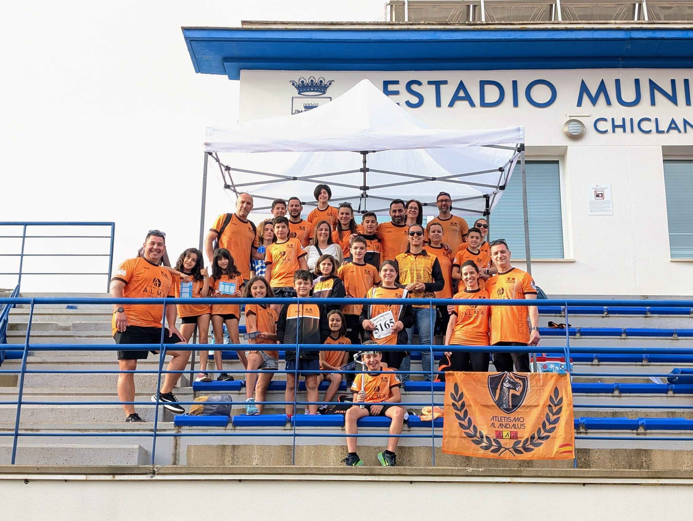

El Club Al-Andalus brilla en el Andaluz Sub-14 de Chiclana

Publicado el 4 de mayo de 2026
El pasado fin de semana, el Estadio Municipal de Atletismo de Chiclana de la Frontera se convirtió en el epicentro del talento joven con la celebración del Campeonato Individual de categoría Sub-14. Entre los clubes participantes, el Club de Atletismo Al-Andalus volvió a destacar no solo por su presencia, sino por el gran espíritu competitivo y la progresión de sus atletas.
Una jornada de esfuerzo y superación
Nuestros jóvenes deportistas afrontaron una jornada intensa, marcada por el buen ambiente y la exigencia técnica propia de estas edades. Los representantes del Al-Andalus participaron en diversas disciplinas, desde la velocidad y los saltos hasta las pruebas de resistencia, demostrando el gran trabajo que se viene realizando en los entrenamientos diarios.
Resultados
En el campeonato de Andalucía sub 14 participaron 8 atletas del club obteniendo dos medallas, 2ª y 4⁰, ambos atletas con opciones de participación en el campeonato de España.
Volver al Inicio